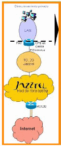
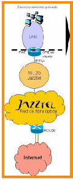
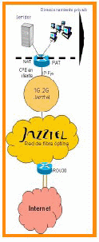
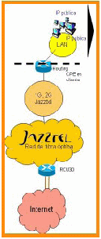

Configuraciones posibles
● Por defecto, en todos los Packs Empresa (ADSL2+ y másDSL) la asignación del direccionamiento público
es DINÁMICA.
● Si el cliente lo solicita, SÍ podrán comercializarse Direcciones Públicas ESTÁTICAS o FIJAS.
● El direccionamiento público se gestionará en el CPE/IAD de cliente. El CPE/IAD es administrado por
JAZZTEL (No se le facilita al cliente las claves de los equipos).
● Los CPE/IAD se instalan con TODOS los puertos cerrados por seguridad en la red del cliente: VIRUS, SPAM
● Las posibles configuraciones son:
Configuración A: Standard
ESQUEMA DEL SERVICIO
● El cliente tiene una LAN con direccionamiento privado.
● Dicha LAN accede a Internet a través de un acceso de Jazztel.
● En el CPE/IAD que instala Jazztel se realiza PAT (la traducción del direccionamiento
privado de la LAN a la IP dinámica (asignada por Red al establecerse la sesión) para
que toda la LAN acceda a Internet.
● La IP asignada por Jazztel puede variar con el tiempo, generalmente modificará su
valor con cada nueva sesión del cliente.
● El CPE/IAD en casa de cliente es configurado y administrado por Jazztel.
● A menos que el cliente disponga de algún servicio de Firewall los paquetes IP del
cliente salen directamente a Internet y se reciben directamente desde Internet.
TOMA DE DATOS DEL CLIENTE
● No es necesario conocer el direccionamiento privado del cliente para la provisión del
servicio.
● Este tipo de provisión es el que se realiza por defecto si no existe solicitud de
direccionamiento IP fija de cliente.
¿PARA QUE?
● Para navegar por Internet. Con esta configuración no se puede:
● acceder a servicios que requieran autenticación por IP desde la LAN del cliente
● dar visibilidad a servidores a su LAN de forma permanente y por tanto, con la misma IP.
● Es adecuado para buena parte de los clientes normales o poco tecnificados, que solo
utilizan Internet para navegación básica.
Configuración B: PAT
ESQUEMA DEL SERVICIO
● El cliente tiene una LAN o PC con direccionamiento privado.
● Dicha LAN accede a Internet a través de un acceso de Jazztel.
● En el CPE/IAD que instala Jazztel se realiza PAT (la traducción del direccionamiento
privado de la LAN a la IP fija (asignada por Red al establecerse la sesión) para que
toda la LAN acceda a Internet.
● La IP no varia, se asigna siempre la misma en el momento en que se establece la
sesión.
● El CPE/IAD en casa de cliente es configurado y administrado por Jazztel.
● A menos que el cliente disponga de algún servicio de Firewall los paquetes IP del
● cliente salen directamente a Internet y se reciben directamente desde Internet sin
ningún tipo de filtrado.
● En muchos casos la IP de PAT asignada es utilizada también como IP de administración
remota del CPE/IAD.
● Sólo se permite 1 IP de PAT por acceso.
TOMA DE DATOS DEL CLIENTE
● No es necesario conocer el direccionamiento privado del cliente para la provisión.
● Este tipo de provisión requerirá solicitud explicita por parte del cliente de este
escenario.
¿PARA QUE?
● Desde la LAN del cliente se podrá navegar por Internet y acceder a determinados
servicios externos que autentiquen por IP. Esta configuración no permite disponer de
servidores que muestren el mismo direccionamiento de forma permanente.

Configuración C: PAT+NAT
ESQUEMA DEL SERVICIO
● El cliente tiene uno o varios servidores con direccionamiento privado que desea hacer
● visibles en Internet. Además tiene una LAN que tendrá acceso a Internet.
● En el CPE/IAD que instala Jazztel se realiza NAT (la traducción del direccionamiento
● privado del servidor a una IP fija (asignada por Red al establecerse la sesión) y PAT (la
● traducción del direccionamiento privado de la LAN a otra IP fija).
● Las IPs no varían, se asignan siempre las mismas en el momento en que se establece
la
● sesión.
● El CPE/IAD en casa de cliente es configurado y administrado por Jazztel.
● A menos que el cliente disponga de algún servicio de Firewall los paquetes IP del
cliente
● salen directamente a Internet y se reciben directamente desde Internet sin ningún tipo
de
● filtrado.
● En muchos casos la IP de PAT asignada es utilizada también como IP de
administración
● remota del CPE/IAD.
● Se permiten N IPs de NAT por acceso, con N=1, 2, 4, 8, 16.
TOMA DE DATOS DEL CLIENTE
● Es necesario conocer las direcciones IP privadas de los servidores sobre los que
● configurar NAT en el CPE.
● No es necesario conocer el direccionamiento privado de la LAN del cliente.
● Este tipo de provisión requerirá solicitud explicita por parte del cliente de este
escenario.
¿PARA QUE?
● Para dar visibilidad a un servidor (Web, de correo, ftp, otro...) de forma permanente con la misma
dirección pública y navegar a Internet. De este modo equipos y servicios externos pueden localizar
fácilmente el equipo y trabajar sobre él remotamente.
Configuración D: Routing
ESQUEMA DEL SERVICIO
● El cliente desea disponer de una red pública (de acceso externo y con
direccionamiento público)
● El CPE/IAD en casa del cliente se configura para hacer routing del direccionamiento
público del cliente (No hay NAT puesto que el cliente asigna direccionamiento público
directamente a sus máquinas).
● Se le proporcionan al cliente la red fija y pública que demanda y Jazztel configura el
CPE/IAD para que realice el ROUTING.
● El Router en casa de cliente es configurado y administrado por Jazztel.
● A menos que el cliente disponga de algún servicio de Firewall los paquetes IP del
cliente salen directamente a Internet y se reciben directamente desde Internet sin
ningún tipo de filtrado.
● Adicionalmente se asigna 1 IP (de un pool diferente) para la administración remota del
CPE/IAD.
● Se permiten N IPs de ROUTING por acceso, con N=8, 16.
● De las N IP’s de una subred, 3 se usan para la configuración del servicio en el CPE
(Broadcast, Red y Gateway)
TOMA DE DATOS DEL CLIENTE
● Las direcciones IP de la red publica las asigna Jazztel, por lo que no es necesario
conocerlas.
● Este tipo de provisión requerirá solicitud explicita por parte del cliente de este
escenario.
¿PARA QUE?
● Para administrar una red Pública (con visibilidad directa hacia Internet.)